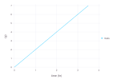

Quick Start
This tutorial builds a complete model, changes its parameters, runs it, and selects useful output. It assumes basic Julia syntax but no previous Cropbox experience.
Load Cropbox
using CropboxCropbox re-exports the u"..." unit string used throughout this manual. Attaching units to model variables catches incompatible calculations early and makes simulation output self-describing.
Declare a model
The following system describes biomass increasing at a constant rate until a target mass is reached.
@system Growth(Controller) begin
rate: growth_rate => 1.5 ~ preserve(parameter, u"g/hr")
target: target_mass => 5 ~ preserve(parameter, u"g")
mass(rate) ~ accumulate(u"g")
mature(mass, target) => mass >= target ~ flag
endMain.GrowthRead each declaration from left to right:
rateandtargetare fixed values. Theparametertag makes them configurable.massdepends onrateand accumulates it using the simulation time step.matureis recalculated as a Boolean condition. Becausemassonly increases in this model, it remains true after the threshold is reached.Controllersupplies configuration and a simulation clock to the top-level system.
Long names after : are aliases. They improve inspection output without making equations verbose.
Inspect defaults
Use parameters before running an unfamiliar model.
parameters(Growth)Config for 1 system:
| Growth | ||
| rate | = | 1.5 g hr^-1 |
| target | = | 5 g |
look shows declarations and documentation. It accepts either a system type or an instance.
look(Growth, :mass)[doc]
[code]
mass(rate) ~ accumulate(u"g")Configure a scenario
Configuration keys form a system-variable-value path. A named tuple is a convenient way to set several variables in one system.
config = @config (
Growth => (rate = 2.0, target = 7.0),
Clock => :step => 30u"minute",
)Config for 2 systems:
| Growth | ||
| rate | = | 2.0 g hr^-1 |
| target | = | 7.0 g |
| Clock | ||
| step | = | 1//2 hr |
Numbers supplied for unitful parameters are interpreted in the parameter's declared unit. Explicit quantities are also accepted.
Create an instance
s = instance(Growth; config)| Growth | |||
| context | = | <Context> | |
| config | = | <Config> | |
| rate | (growth_rate) | = | 2.0 g hr^-1 |
| target | (target_mass) | = | 7.0 g |
| mass | = | 0.0 g | |
| mature | = | false | |
instance initializes the full system and performs its initial update. Access a variable with property syntax; postfix ' retrieves the current value stored in a Cropbox state.
s.mass', s.mature'(0.0 g, false)Calling update!(s) advances this same instance. Most analyses should use simulate, which also collects output.
Run the model
Stop on the model condition and request only the columns needed for the result.
result = simulate(Growth;
config,
stop = :mature,
target = [:mass, :mature],
)| Row | time | mass | mature |
|---|---|---|---|
| Quantity… | Quantity… | Bool | |
| 1 | 0.0 hr | 0.0 g | false |
| 2 | 0.5 hr | 1.0 g | false |
| 3 | 1.0 hr | 2.0 g | false |
| 4 | 1.5 hr | 3.0 g | false |
| 5 | 2.0 hr | 4.0 g | false |
| 6 | 2.5 hr | 5.0 g | false |
| 7 | 3.0 hr | 6.0 g | false |
| 8 | 3.5 hr | 7.0 g | true |
The initial state is included when the default snapshot rule is used. The default index is context.clock.time, displayed as time.
To stop after a duration instead, pass a number or quantity.
simulate(Growth; config, stop = 2u"hr", target = :mass)| Row | time | mass |
|---|---|---|
| Quantity… | Quantity… | |
| 1 | 0.0 hr | 0.0 g |
| 2 | 0.5 hr | 1.0 g |
| 3 | 1.0 hr | 2.0 g |
| 4 | 1.5 hr | 3.0 g |
| 5 | 2.0 hr | 4.0 g |
Compare scenarios
! expands an iterable value into a vector of configurations.
configs = @config config + !(Growth => :rate => [1.0, 2.0, 3.0])
comparison = simulate(Growth;
configs,
stop = 4u"hr",
target = :mass,
meta = :Growth,
)| Row | time | mass | rate | target |
|---|---|---|---|---|
| Quantity… | Quantity… | Quantity… | Quantity… | |
| 1 | 0.0 hr | 0.0 g | 1.0 g hr^-1 | 7.0 g |
| 2 | 0.5 hr | 0.5 g | 1.0 g hr^-1 | 7.0 g |
| 3 | 1.0 hr | 1.0 g | 1.0 g hr^-1 | 7.0 g |
| 4 | 1.5 hr | 1.5 g | 1.0 g hr^-1 | 7.0 g |
| 5 | 2.0 hr | 2.0 g | 1.0 g hr^-1 | 7.0 g |
| 6 | 2.5 hr | 2.5 g | 1.0 g hr^-1 | 7.0 g |
| 7 | 3.0 hr | 3.0 g | 1.0 g hr^-1 | 7.0 g |
| 8 | 3.5 hr | 3.5 g | 1.0 g hr^-1 | 7.0 g |
| 9 | 4.0 hr | 4.0 g | 1.0 g hr^-1 | 7.0 g |
| 10 | 0.0 hr | 0.0 g | 2.0 g hr^-1 | 7.0 g |
| 11 | 0.5 hr | 1.0 g | 2.0 g hr^-1 | 7.0 g |
| 12 | 1.0 hr | 2.0 g | 2.0 g hr^-1 | 7.0 g |
| 13 | 1.5 hr | 3.0 g | 2.0 g hr^-1 | 7.0 g |
| 14 | 2.0 hr | 4.0 g | 2.0 g hr^-1 | 7.0 g |
| 15 | 2.5 hr | 5.0 g | 2.0 g hr^-1 | 7.0 g |
| 16 | 3.0 hr | 6.0 g | 2.0 g hr^-1 | 7.0 g |
| 17 | 3.5 hr | 7.0 g | 2.0 g hr^-1 | 7.0 g |
| 18 | 4.0 hr | 8.0 g | 2.0 g hr^-1 | 7.0 g |
| 19 | 0.0 hr | 0.0 g | 3.0 g hr^-1 | 7.0 g |
| 20 | 0.5 hr | 1.5 g | 3.0 g hr^-1 | 7.0 g |
| 21 | 1.0 hr | 3.0 g | 3.0 g hr^-1 | 7.0 g |
| 22 | 1.5 hr | 4.5 g | 3.0 g hr^-1 | 7.0 g |
| 23 | 2.0 hr | 6.0 g | 3.0 g hr^-1 | 7.0 g |
| 24 | 2.5 hr | 7.5 g | 3.0 g hr^-1 | 7.0 g |
| 25 | 3.0 hr | 9.0 g | 3.0 g hr^-1 | 7.0 g |
| 26 | 3.5 hr | 10.5 g | 3.0 g hr^-1 | 7.0 g |
| 27 | 4.0 hr | 12.0 g | 3.0 g hr^-1 | 7.0 g |
Metadata columns identify the configuration used for each run. For larger experiments, request individual metadata pairs rather than every parameter in a system.
Plot output
visualize accepts the data frame returned by simulate.
visualize(result, :time, :mass; kind = :line)
It can also simulate a system and plot the result in one call:
visualize(Growth, :time, :mass;
config,
stop = 4u"hr",
kind = :line,
)Next steps
- How Cropbox Works explains systems, dependencies, and behaviors.
- Configure Models and Scenarios covers merging and factorial combinations.
- Run Simulations and Shape Output covers nested paths, snapshots, callbacks, and output formats.
- Weather-driven Phenology adds calendar time and tabular input.